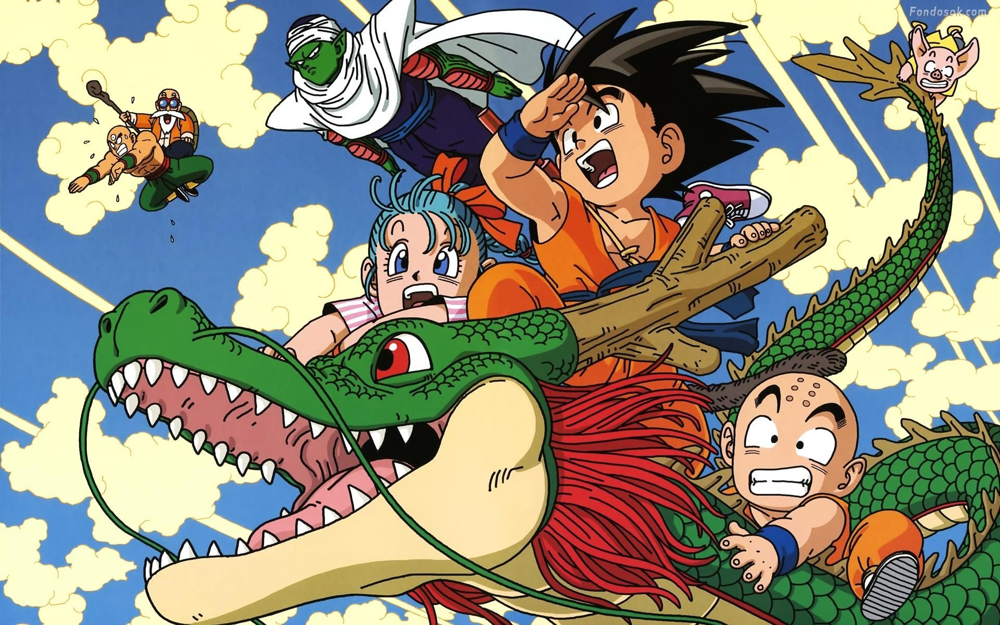
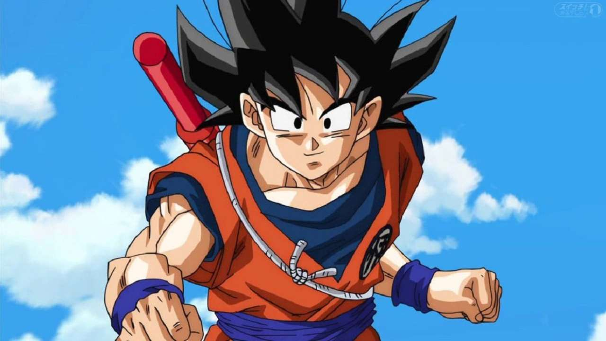

A história de Dragon Ball começa com Son Goku, um garoto ingênuo e puro com cauda de macaco e uma força extraordinária. Ele mora sozinho após a morte de seu avô adotivo em uma montanha chamada Paozu. Um dia ele conhece Bulma, uma garota muito inteligente da cidade, que estava em busca das sete Esferas do Dragão.
Persuadido, Goku concorda em ajudar Bulma a encontrar as Esferas. Os dois partem em uma longa jornada, durante a qual eles fazem muitos amigos. Depois, Goku passa por um treinamento com Kame-Sennin, onde o garoto Kuririn se torna seu parceiro, e participa de vários torneios mundiais de artes marciais.
No curso de seu crescimento e seu desenvolvimento, ele enfrenta inúmeros inimigos, incluindo Piccolo, que depois se torna seu aliado. Quando jovem adulto, Goku se casa com Chi-Chi, cumprindo uma promessa feita por ele quando ambos eram crianças, e possui seu primeiro filho chamado Gohan.
Goku acaba descobrindo que pertence à raça extraterrestre Saiyajin, e que foi enviado à Terra quando criança para conquistar o planeta. Pouco depois de sua chegada, no entanto, ele tinha sofrido um ferimento na cabeça, perdendo desta forma a memória da missão e sua natureza agressiva. No entanto, o jovem decide continuar a defender seu planeta adotado do ataque de inimigos cada vez mais difíceis, incluindo o príncipe dos sayajins Vegeta, que depois também se torna seu aliado. Desta forma, juntamente com sua família e seus amigos, Goku luta contra inimigos como Freeza, Cell, Boo, entre outros, se tornando o protetor da Terra e todo o universo
Akira Toriyama revelou que sua obra tem influências a lenda chinesa do Rei Macaco e a história Journey to the West. Em essência Son Goku vem de Sun Wukong.
Son Goku é a tradução japonesa do nome chinês Sun Wukong, escrito com os caracteres 悟空. O nome de Son Goku pode ser traduzido como “iluminado para o vazio” ou “consciente do vazio”
